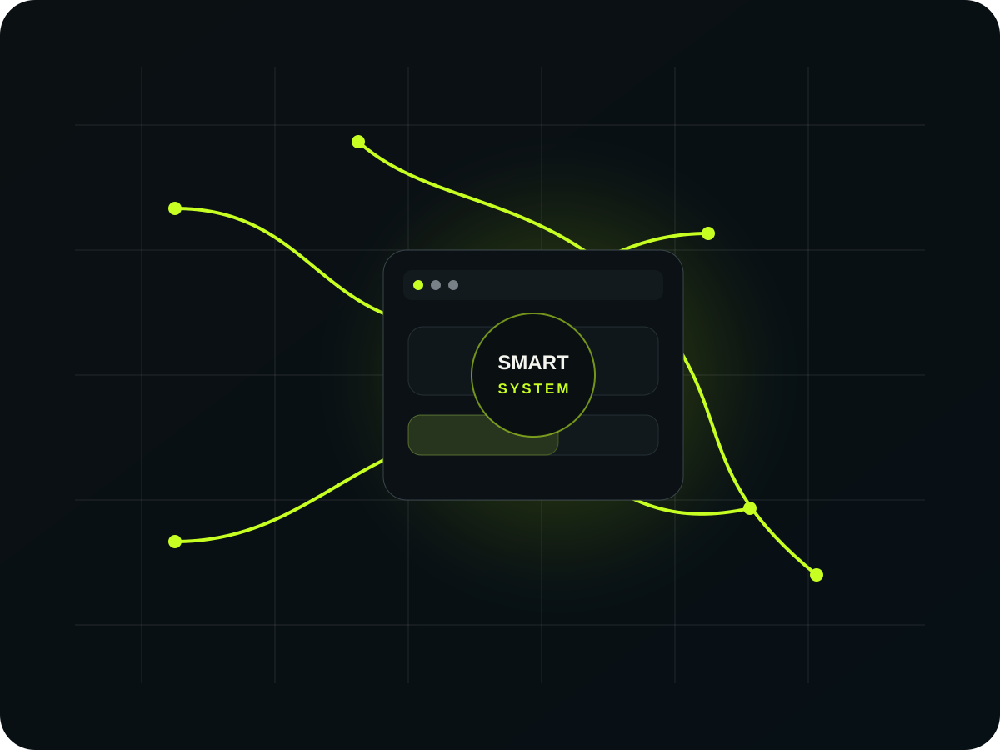

01 / Build
Web experiences
Conversion-focused websites, landing pages, UI/UX and e-commerce built for clarity, speed and the next action.
Web DesignDevelopmentUI/UXE-commerce
Explore web services ↗Websites, brand systems, growth experiences and intelligent automation designed around the way your business actually works.
Web · Brand · Growth · AI · Automation · Digital Strategy

Choose the outcome that matters most. We will map a practical service stack around it instead of pushing a one-size-fits-all package.
Open the Project Planner ↗Real portfolio concepts, focused on different business models and customer journeys. Concept work is labelled clearly.
Choose the capability you need, then connect it to the rest of the customer journey instead of building it in isolation.
Conversion-focused websites, landing pages, UI/UX and e-commerce built for clarity, speed and the next action.
Identity, logos, visual direction and brand assets that create a recognizable experience across every touchpoint.
Content, social, lead generation, marketing, SEO and conversion foundations connected to a clear business objective.
AI, workflow automation, integrations and analytics that reduce manual work and make useful information easier to act on.
Goals, audience, constraints.
Journey, information and scope.
Design, development and systems.
QA, SEO, analytics and handoff.
Measure, learn and optimize.
Model costs, conversion, acquisition, automation and project economics before you commit.
Scope-aware investment range based on pages, functionality, integrations and delivery needs.
Open model ↗Model traffic, conversion, revenue, margin, CAC, ROAS and break-even economics.
Open model ↗Estimate addressable hours, savings, implementation cost and payback.
Open model ↗